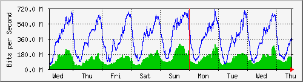
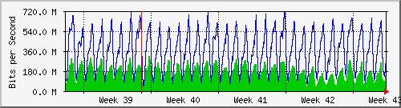
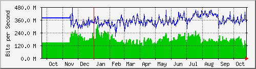

Traffic Analysis for Gi1/0/5 -- spider.sky
| System: | spider.sky in stoyka |
| Maintainer: | falcon@skyinet.org |
| Description: | GigabitEthernet1/0/5 old7204cisco-out |
| ifType: | ethernetCsmacd (6) |
| ifName: | Gi1/0/5 |
| Max Speed: | 1000.0 Mbits/s |
| Ip: | No Ip (No DNS name) |
The statistics were last updated Thursday, 26 October 2017 at 12:55,
at which time 'spider.sky' had been up for 8 days, 10:32:41.
`Daily' Graph (5 Minute Average)

|
Max |
Average |
Current |
| In |
305.3 Mb/s (30.5%) |
127.1 Mb/s (12.7%) |
162.9 Mb/s (16.3%) |
| Out |
716.8 Mb/s (71.7%) |
324.3 Mb/s (32.4%) |
323.2 Mb/s (32.3%) |
`Weekly' Graph (30 Minute Average)

|
Max |
Average |
Current |
| In |
296.9 Mb/s (29.7%) |
123.1 Mb/s (12.3%) |
130.2 Mb/s (13.0%) |
| Out |
708.0 Mb/s (70.8%) |
363.6 Mb/s (36.4%) |
382.7 Mb/s (38.3%) |
`Monthly' Graph (2 Hour Average)

|
Max |
Average |
Current |
| In |
310.7 Mb/s (31.1%) |
160.9 Mb/s (16.1%) |
142.5 Mb/s (14.3%) |
| Out |
709.7 Mb/s (71.0%) |
356.6 Mb/s (35.7%) |
295.0 Mb/s (29.5%) |
`Yearly' Graph (1 Day Average)

|
Max |
Average |
Current |
| In |
313.4 Mb/s (31.3%) |
171.3 Mb/s (17.1%) |
133.1 Mb/s (13.3%) |
| Out |
468.7 Mb/s (46.9%) |
354.6 Mb/s (35.5%) |
360.6 Mb/s (36.1%) |
| GREEN ### |
Incoming Traffic in Bits per Second |
| BLUE ### |
Outgoing Traffic in Bits per Second |